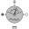

TorqueSensorIdeal sensor to measure the torque between two flanges (= flange_a.tau) |
Information
This information is part of the Modelica Standard Library maintained by the Modelica Association.
Measures the cut-torque between two flanges in an ideal way and provides the result as output signal tau (to be further processed with blocks of the Modelica.Blocks library).
Connectors (3)
| flange_a |
Type: Flange_a Description: Left flange of shaft |
|
|---|---|---|
| flange_b |
Type: Flange_b Description: Right flange of shaft |
|
| tau |
Type: RealOutput Description: Torque in flange flange_a and flange_b (tau = flange_a.tau = -flange_b.tau) as output signal |
Used in Examples (6)
|
Modelica.Electrical.Machines.Examples.SynchronousInductionMachines Test example: PermanentMagnetSynchronousInductionMachine fed by current source |
|
|
Modelica.Electrical.Machines.Examples.SynchronousInductionMachines Test example: PermanentMagnetSynchronousInductionMachine fed by FOC |
|
|
Modelica.Magnetic.FundamentalWave.Examples.BasicMachines Test example: PermanentMagnetSynchronousInductionMachine fed by current source |
|
|
Modelica.Magnetic.FundamentalWave.Examples.BasicMachines Test example: PermanentMagnetSynchronousInductionMachine fed by FOC |
|
|
Modelica.Mechanics.MultiBody.Examples.Loops V6 engine with 6 cylinders, 6 planar loops and 1 degree-of-freedom |
|
|
Modelica.Mechanics.MultiBody.Examples.Loops V6 engine with 6 cylinders, 6 planar loops, 1 degree-of-freedom and analytic handling of kinematic loops |
Used in Components (3)
|
Modelica.Blocks.Examples.NoiseExamples.Utilities.Parts Synchronous induction machine with current controller and measurement noise |
|
|  |
Modelica.Electrical.Machines.Sensors Mechanical power = torque x speed |
|
Modelica.Mechanics.Rotational.Components Signal adaptor for a Rotational flange with torque as output and angle, speed, and optionally acceleration as inputs (especially useful for FMUs) |